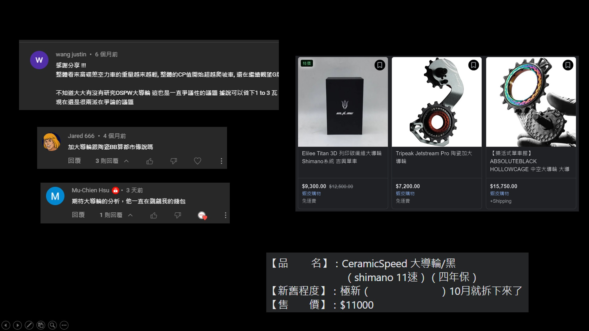
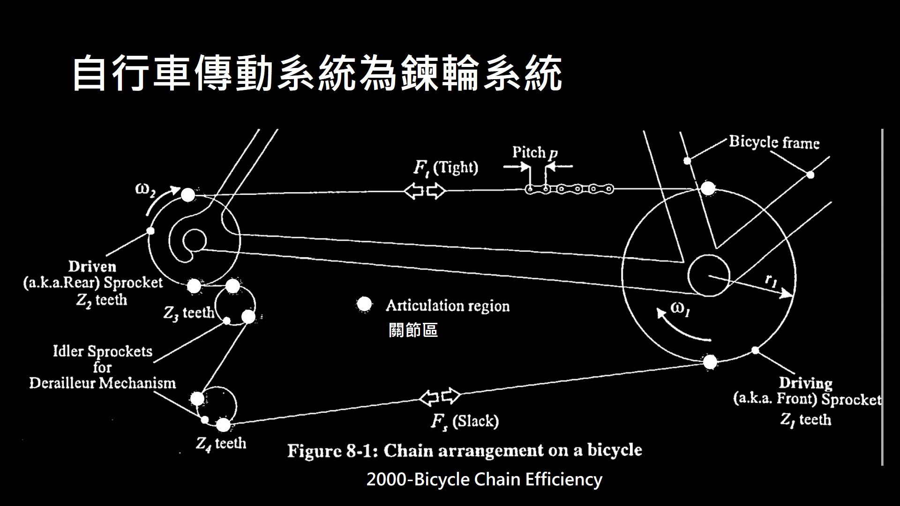
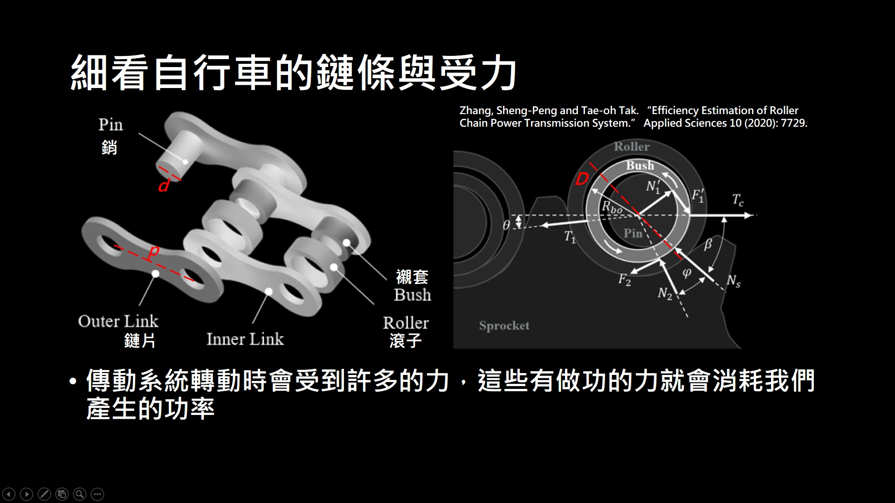
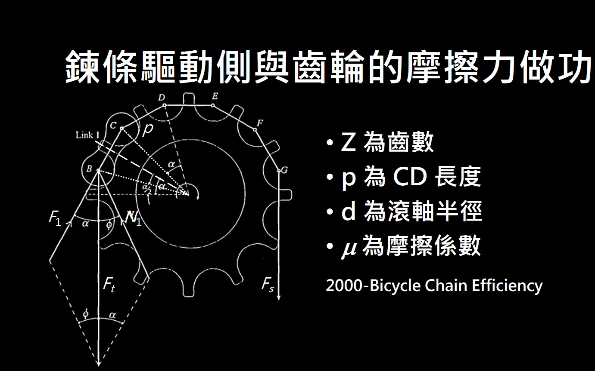
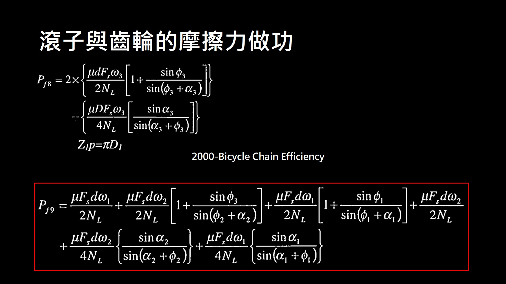
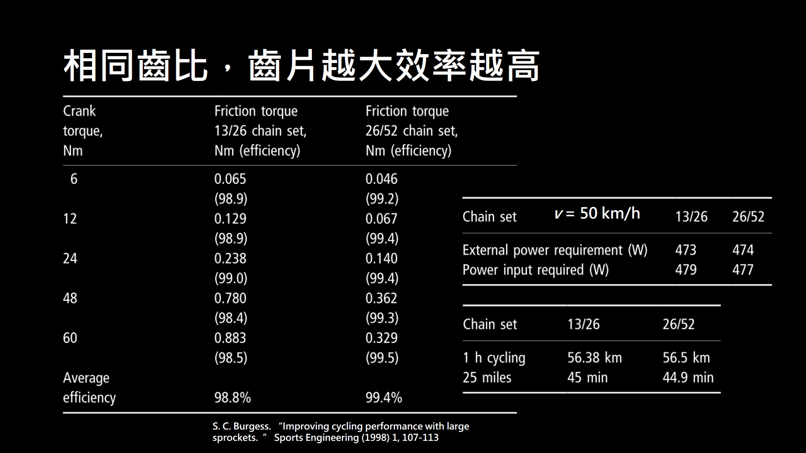
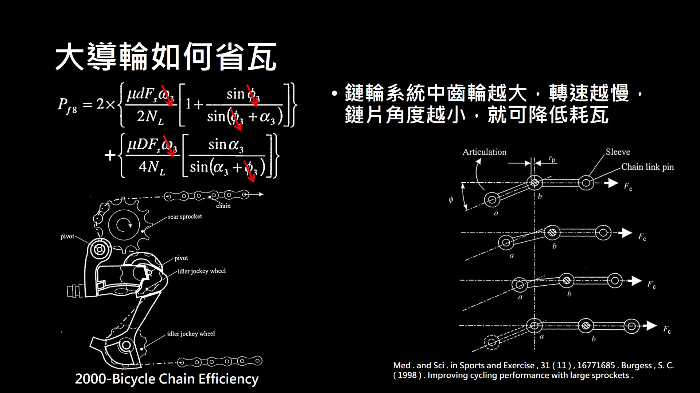
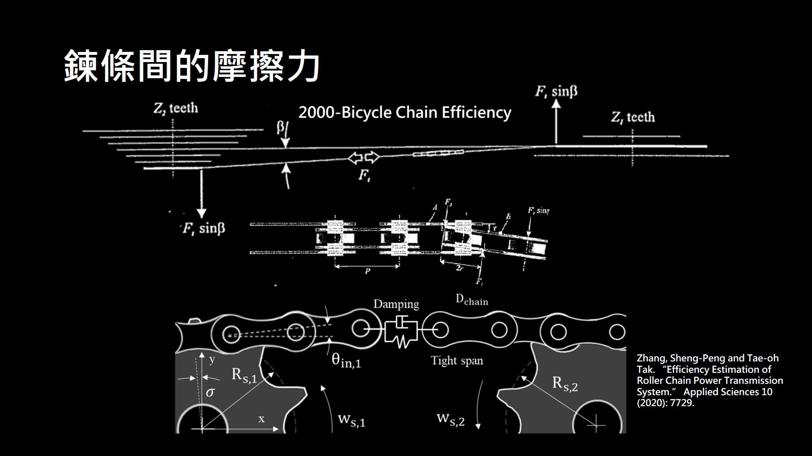
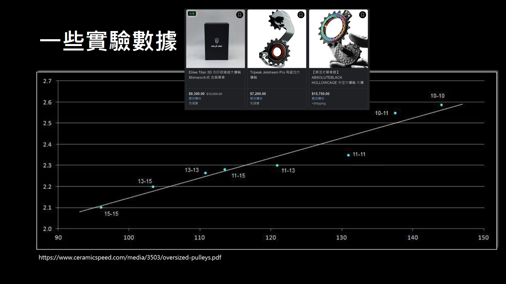
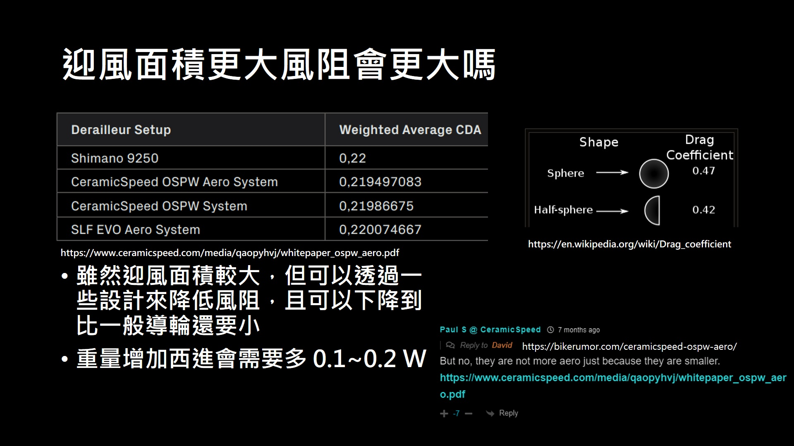

大導輪能夠讓你省瓦嗎？用力學分析告訴你
大導輪雖然不是這幾年才出現在賽場上，但是卻是有越來越多的選手使用大導輪，而且也越來越多廠商跳進來做，也有越來越多的消費者對此產品產生興趣，不論是頻道或是粉絲專頁，也是陸陸續續收到有人對於大導輪的詢問，當然大導輪一個也很貴 要換也是想很久，尤其是像我這種還沒接到葉配的，Youtuber 來說算是很貴的周邊，所以就趕快來做一部有關大導輪的影片，來看看這個錢值不值得我花。
|  |
|---|
| 圖一：大導輪價錢 |
當然除了我以外也滿多人對於大導輪能省瓦有疑問，所以在 youtube 社群做了個調查，結果大概是一半一半，票數約有80票，表示大家對宣稱的說法還是有所存疑，當然我自己查一下網路上的說法，大部分的人是沒有感覺的，而解釋的部分也沒有說得很清楚，所以就自己找了一下相關論文從理論下手。
當然強調能省瓦數的產品就要來算算看做功，而做功在機械上一般是從力學分析下手，所以我們就來看看自行車傳動系統的力學分析，自行車傳動系統是齒輪搭配鍊條，稱作練輪系統。在自行車中是有一個驅動輪，也就是大盤，和一個被驅動輪，也就是飛輪，然後與兩個導輪作為變速用的鍊輪系統，當然越多接觸點就會有越多的摩擦耗損，不過相較於變速系統帶來的效益，與多兩個導輪所損失的瓦數相比變速還是很重要的。而鍊輪系統在轉動時兩邊鍊條的受力也不同，以前國高中學到的滑輪系統都會假設，滑輪與繩子之間無摩擦，所以兩邊張力相等，但是因為這邊是利用轉動齒輪去帶動鍊條，鍊條再去帶動其他齒輪，所以兩邊張力不同，所以會有一邊較緊，另一邊則比較鬆，這跟驅動側的轉動方向有關，但這邊就不細講，在此我們先來關注齒輪的瓦數損耗，最後再來看整個鍊輪系統的瓦數損耗。
|  |
|---|
| 圖二：整個鍊輪系統 |
齒輪由鍊條帶動，先來看鍊條的內部結構與受力，鍊條的組成是有鍊片、襯套、滾子跟插銷組成，當然鍊條在轉動時這些部位一定會接觸，會接觸也就會產生摩擦力，這些摩擦力最後也會影響導輪的耗瓦，右圖就是將鍊條內部的力畫出來，雖然看起來很多很複雜，不過這就是做任何力學分析的第一步。
|  |
|---|
| 圖三：鍊條的內部結構與受力 |
那麼來看鍊條與齒輪間的摩擦力做功，功率就是一段時間內的做功變化，摩擦力做功就是力與作用點的內積，所以這邊只要算出做功再除以時間變化，就可以算出這部分的瓦數消耗，這邊的作用力是 Ft 做用力的位移，就是滾子轉了 α 角度的弧長，再計算走這段距離需要多少時間，會跟齒輪轉速和齒輪齒數有關，算出來後兩個相除就是做功。
P =ΔW/ΔT = Δ(F ‧ S )/ΔT
ΔW1 = mFt (d/2)α = pmF (d/Z1) (Z1α = 2p )
ΔT1 = NL p /ω1r1 = 2pNL / ω1r1
P1 = ΔW/ΔT = Ft dω1/(2NL )
|  |
|---|
| 圖四：鍊條與齒輪間的摩擦力做功 |
再來看看被驅動側的做功，由於整個鍊輪系統鍊條的速度一樣，不一樣就會斷掉，所以經過時間還是一樣，不一樣的只有力，所以把力找出來後，再把前面得到的數據帶進去就可以得到做功，這邊利用鉛直力與水平力去做計算，就可以得到其餘的算式，一樣就不細講了。
最後就是滾子與齒輪之間的摩擦力做功，一樣推導過程不細講，有興趣可自行去推，最後就將前面推導的所有力加起來，就可以得到鍊條與齒輪間的總做功，雖然看起來很多項，不過這只有「一個」，齒輪與鍊條間的受力與做功而已，當然因為不管是大盤，飛輪還是導輪，都可以使用相同的模型，所以直接套進去就好了。
|  |
|---|
| 圖五：滾子與齒輪的摩擦力做功 |
我們先來看大盤與飛輪齒比的效率，這邊有兩個齒比一樣的檔位，但是就實驗結果來看，齒數越多就又有效率，而且當瓦數卻高時效率也差越多，若是時速 50 的話可以省下 1~2 W，從世界紀錄來看可以讓你 40 km 快 6 秒，這個對於世界級的選手來說是非常多的，因為個人計時賽差異幾乎是非常小，所以從實驗結果來看 齒比不變，但是將齒數增加就可以讓你省下瓦數。
|  |
|---|
| 圖六：齒片越大效率越高 |
所以從實驗結果來看我們可以推論，導輪換大顆一點，齒數多一點確實也可以減瓦，那麼就理論而言，到底是哪些部分省下了瓦數呢，這邊我們就來看一下改變導輪大小會改變那些量，因為鍊條每目長度相同，所以當導輪齒數增加，那麼大小勢必要增加，也就是半徑就會增加，而半徑增加，導輪的轉速就會降低，且因為半徑增加，鍊條的關節處轉的角度也減少，所以從推導出的式子來看，做功就變少了，就意味著所消耗的瓦數就降低了，而且因為換大導輪半徑變化比例大，所以轉速降低會很多，所以降低的比例也會很多。
|  |
|---|
| 圖七：大導輪如何省瓦 |
那麼換成大導輪到底能減少多少耗瓦呢，我們可以來看一下整個傳動系統的耗瓦，這個地球上的機械只要會動就會有摩擦力，所以來看一下導輪本身佔了多少耗瓦，一般來說整個傳動系統會有 5~10 % 的機械損耗，也就是如果車手施 200 W 給車子，那麼傳到車子的只剩下 190 ~ 180 W，這篇論文最後去做研究發現，導輪的部分大概佔了 12% 左右，也就是大概有 2.4 W 的損耗是來自導輪，當然瓦數越高導輪的損耗也會越高，項職業車手如果有 400 W 的話就有 4.8 W 的損耗，如果是從原廠導輪換成大導輪，也不可能就不耗瓦 頂多就是耗瓦降低，所以就前面的推導來看 因為轉速跟角度都降低了，因為角度變化不大 且還要再取正弦值所以影響不大，而轉速跟半徑成反比 從 11T 換成 16T，所以只換大導輪的話 如果是施 200 W 的力，在只有考慮鍊條與齒輪摩擦力的情況下，理論上大概可以讓你省下 1 W 左右的瓦數，當然瓦數越高理論上能省下的瓦數就越多。
 |
|---|
| 圖八：導輪的耗瓦佔整個傳動系統的比例 |
整個鍊輪系統除了鍊條與齒輪間的摩擦力外，鍊條本身也會因為當位的關係有摩擦力，雖然齒片越大所損失的耗瓦就越小，但是因為變速系統的關係，當使用大對大檔位時，鍊條會歪斜，那麼鍊片之間就會有更大的摩擦力，整體而言會不會讓你更有效率就不一定，而鍊條在騎乘中也會有震動也會有摩擦力，鍊條拉伸過長後除了會讓傳動受更大損傷外，再騎乘過程中也會讓你耗費更多的瓦數，所以記得每過一段時間或一定的里程數要去檢查。
|  |
|---|
| 圖九：鍊條歪斜的摩擦力 |
在 2013 年時 friction fact 這家公司，有去做了一些大導輪的摩擦力實驗，這家公司現在被 CS 這家公司收購了，不過這份數據出來前尚未被收購，且在網路上已經找不太到他們的實驗結果，從這份資料可以大概知道，若是導輪越大 則鍊條與齒輪間的角度越小，耗瓦確實也會越低 如圖中藍色小點所示，所以確實與理論推導的結果相符，當然這些數據都是在實驗室內部測得，也就是其他變數都控制得很良好的情況下，那為什麼變速器大廠不給標配大導輪呢，第一個就是價錢問題 因為大導輪較貴，其實看一般非原廠大導輪價錢就知道了，畢竟還是有幾家公司在變速市場上競爭，所以價錢太貴可能就會降低市占，而變速穩定度目前在只換下方導輪的情況下，倒是沒有聽到有什麼常掉鍊的情況，當然還有其他考量但我們不知道而已。
|  |
|---|
| 圖十：摩擦力與導輪大小的關係 |
另外就是大導輪迎風面積確實比較大，那麼減少的瓦數會被增加的風阻抵銷嗎，在這點我們要先釐清風阻與風阻面積，風阻的形成是因為風會有壓力與摩擦力，當然就迎風面來說 面積越大風阻也越大，然而大部分的人會忽略摩擦力的部分，摩擦力可以靠形狀的設計來減少，例如高框輪與低框輪迎風面積相同，但是高框輪的風阻卻比較小，就是因為摩擦力較小，所以雖然這個測試是 CS 自己出的報告，而他們說他們連大導輪都進去風洞做設計，所以測出來比 9250 導輪風阻還小是有可能的，只不過內部人員出來回就被噓 只能幫QQ，當然你也可以說這份報告就他們自己做的，所以說自己是第一名，這也沒關係，畢竟風洞實驗你有錢就可以去測，或是你也可以用一些商用軟體去模擬，甚至自己寫有限元素算法也可以，所以風阻除了風阻面積還有風阻係數，不過能肯定的是大導輪會重個幾十克，就大導輪外加空力罩會多 50 克，以大家最愛看的西進武嶺來講，用我的計算機算出來大概會多 0.1~0.2 W，整體而言大概能降低 1~2 W。
|  |
|---|
| 圖十一：導輪的風阻與重量造成的瓦數增加 |
所以就理論來看 大導輪確實能夠降低耗瓦，理由是降低了齒輪轉速與鍊條和齒輪間的夾角，所以轉動時地耗瓦就減少了，變速相同齒比下 齒數越多也會越有效率，但是在考量變速器鍊條歪斜的情況下，大對大倒是不一定能夠讓你省到瓦數，就實驗室的結果而言 如果單純只有轉動測試，導輪越大確實耗瓦也就越低，但對於騎乘者而言還需要考慮到風阻與重量，所以在室外騎乘與爬坡時，就理論上來看大概能省 1~2 W，而變速器大廠不標配其一原因就是價錢，看看副廠的大導輪都要七八千甚至上萬，當然可能還有其他我們不知道的因素，所以如果你差這一點就能上頒獎台甚至第一，或者這些費用對你來說不在意，那大導輪也許可以幫你一把。
參考資料
[1] 2000-Bicycle Chain Efficiency
[2] Zhang, Sheng-Peng and Tae-oh Tak. “Efficiency Estimation of Roller Chain Power Transmission System.” Applied Sciences 10 (2020): 7729.
[3] S. C. Burgess. “Improving cycling performance with large sprockets. ” Sports Engineering (1998) 1, 107-113
[4] Med . and Sci . in Sports and Exercise , 31 ( 11 ) , 16771685 . Burgess , S. C. ( 1998 ) . Improving cycling performance with large sprockets .
[5] https://www.ceramicspeed.com/media/3503/oversized-pulleys.pdf